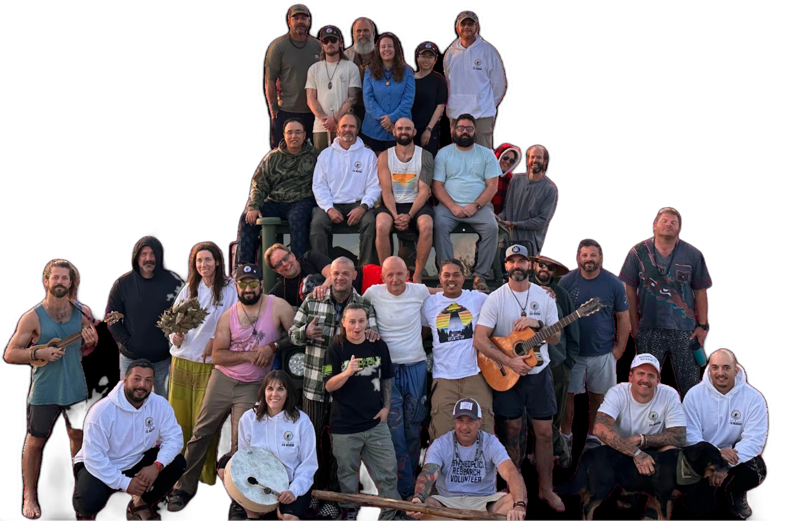
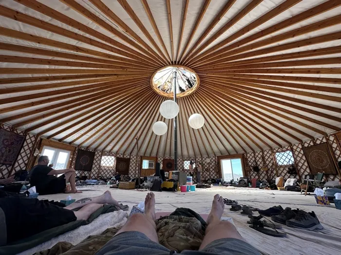
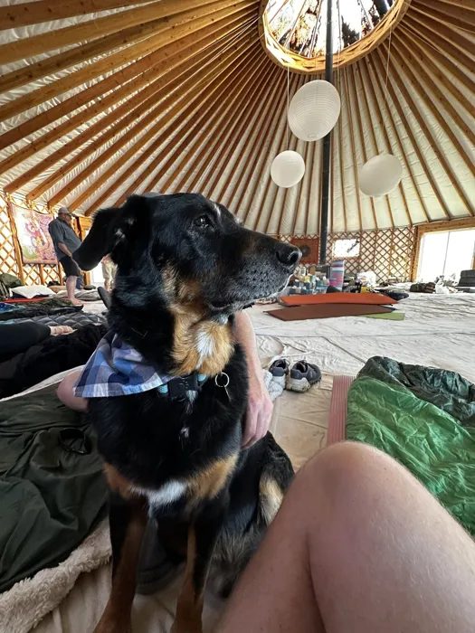
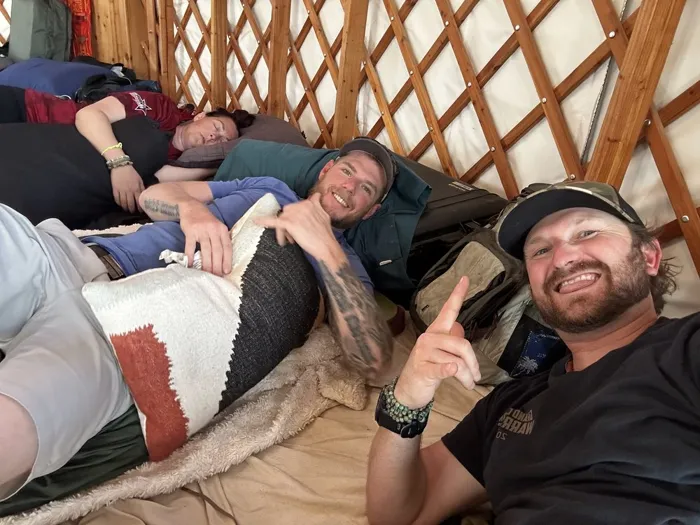
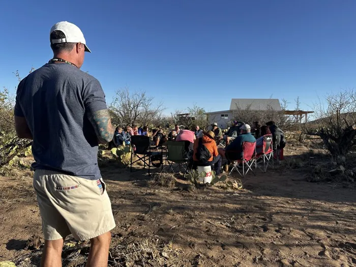
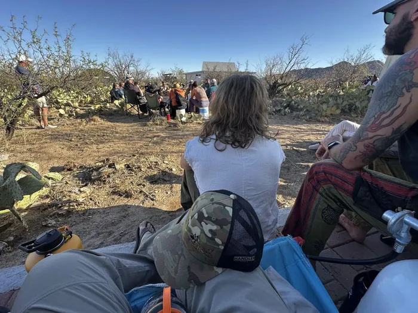
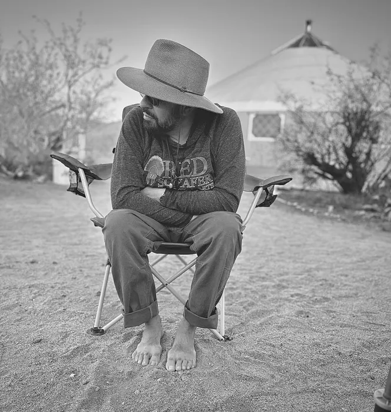
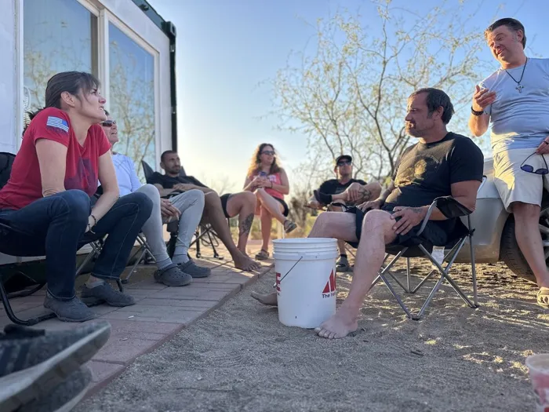
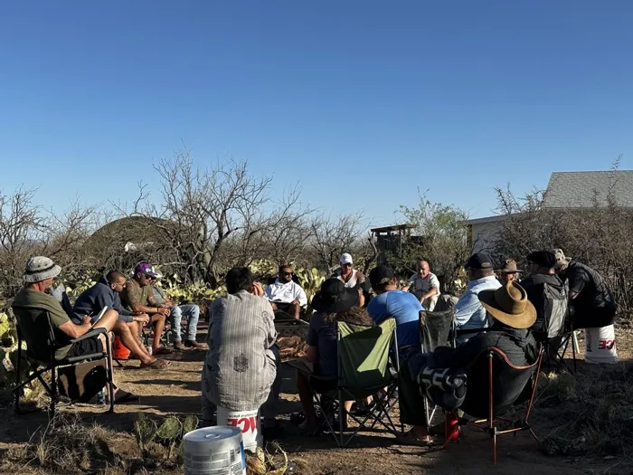

Real veterans. Real healing. The community you see below is why this mission exists.

"...The Aya Mission opened doors for me so that I could unpack all the trauma from combat."
— SGT Michael Telles
"...I felt the weight of the world leaving my shoulders. Although the pain still lingers, I am hopeful for the future."
— SSG Ulises Lopez
"...I feel that I can love my family more deeply. I feel like a new man."
— SGT Andrew "Doc" Lunsford








Swipe or scroll sideways for more episodes →
Veteran Nathan Henderson shares his transformative journey with Ayahuasca and plant medicines — his struggles with post-military mental health, divorce, and healing through nature and community.
Listen on Spotify
Ulises Lopez's path from a challenging childhood to decorated U.S. Army combat veteran, through post-service struggles, to healing through plant medicine — and co-founding The Aya Mission.
Listen on Spotify
Veteran Andrew Lunsford shares his healing journey from PTSD and substance abuse through plant medicines, support systems, and personal growth.
Listen on Spotify
Plant medicine practitioners explore the crucial role of integration in healing — preparation, breathwork, expectation management, and tradition meeting modern mental health care.
Listen on SpotifyVeterans, families, caregivers, and survivors — we're here for you.
Apply for Support